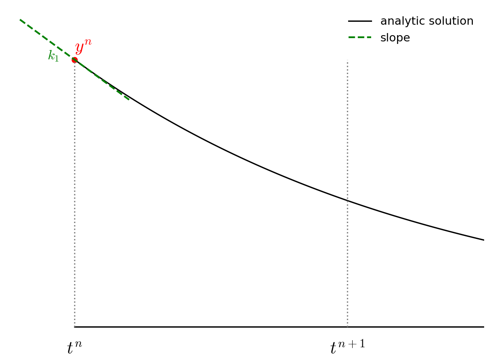
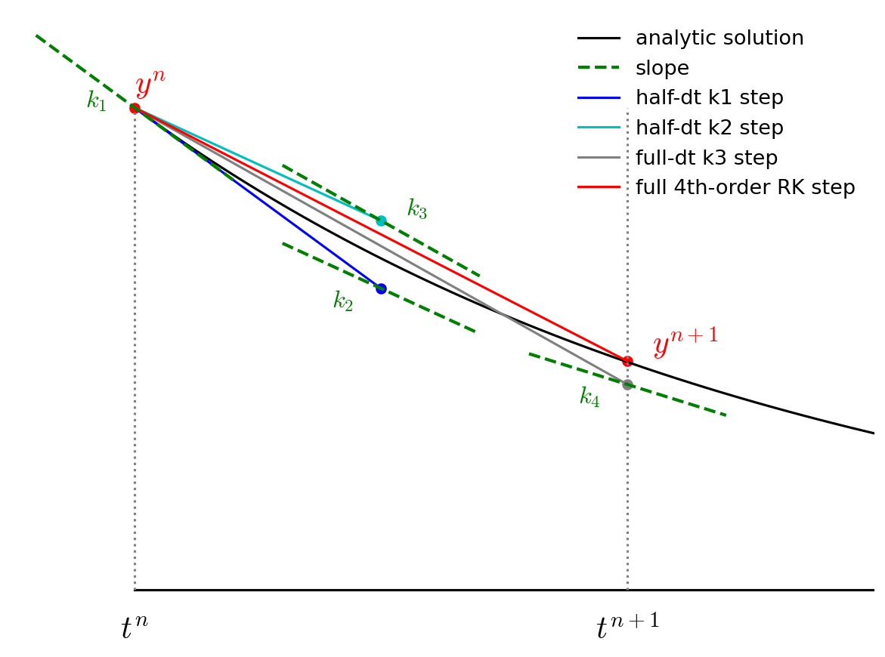

Higher-order Accurate ODE Integration
Contents
import numpy as np
import matplotlib.pyplot as plt
import matplotlib as mpl
mpl.rcParams['figure.dpi'] = 100
mpl.rcParams['figure.figsize'] = (10, 8)
Higher-order Accurate ODE Integration#
We’ll continue to work on the orbit problem, so let’s define our RHS.
G = 4*np.pi**2
M_sun = 1.0
def rhs(t, Y):
# unpack just to make things easier to read
x, y, vx, vy = Y
xdot = vx
ydot = vy
r = np.sqrt(x * x + y * y)
vxdot = -G * M_sun * x / r**3
vydot = -G * M_sun * y / r**3
return np.array([xdot, ydot, vxdot, vydot])
We’ll also define our OrbitHistory class again, this time adding a method to return the error we explored previously, and to mae a plot.
class OrbitHistory:
"""store the time history of the orbit solution"""
def __init__(self):
self.t = []
self.x = []
self.y = []
self.vx = []
self.vy = []
def store_current_solution(self, t, Y):
self.t.append(t)
self.x.append(Y[0])
self.y.append(Y[1])
self.vx.append(Y[2])
self.vy.append(Y[3])
def error_radius(self):
"""return the difference in the distance from the Sun"""
R_orig = np.sqrt(self.x[0]**2 + self.y[0]**2)
R_new = np.sqrt(self.x[-1]**2 + self.y[-1]**2)
return np.abs(R_new - R_orig)
def error_position(self):
"""return the difference in the distance from the Sun"""
dx = self.x[0] - self.x[-1]
dy = self.y[0] - self.y[-1]
return np.sqrt(dx**2 + dy**2)
def plot(self, ax=None, label=None):
"""make a plot of the solution. If ax is None we setup a figure
and make the entire plot returning the figure object, otherwise, we
just append the plot to a current axis"""
fig = None
if ax is None:
fig = plt.figure()
ax = fig.add_subplot(111)
# draw the Sun
ax.scatter([0], [0], marker=(20,1), color="y", s=250)
# draw the orbit
ax.plot(self.x, self.y, label=label)
if fig is not None:
ax.set_aspect("equal")
ax.set_xlabel("x [AU]")
ax.set_ylabel("y [AU]")
return fig, ax
2nd-order Runge Kutta / Midpoint method#
The Euler method was based on a first-order difference approximation to the derivative. But we know that a centered-derivative is second order accurate, so we can try to update our system in the form:
Then the updates are:
This is locally third-order accurate (but globally second-order accurate), but we don’t know how to compute the state at the half-time.
To find the \(n+1/2\) state, we first use Euler’s method to predict the state at the midpoint in time. We then use this provisional state to evaluate the accelerations at the midpoint and use those to update the state fully through \(\tau\).
The two step process appears as:
then we use this for the full update:
Graphically this looks like the following:
First we take a half step and we evaluate the slope at the midpoint:

Then we go back to \(t^n\) but follow the slope we found above all the way to \(t^{n+1}\):

Notice how the final step (the red line) is parallel to the slope we computed at \(t^{n+1/2}\). Also note that the solution at \(t^{n+1}\) is much closer to the analytic solution than in the figure from Euler’s method.
Let’s see how this method does with the orbit problem.
def euler_rk2(Y0, tau, T):
# we'll return an orbit history object
o = OrbitHistory()
# storage for the new solution
Y = Y0.copy()
# initialize time
t = 0
# store the initial conditions
o.store_current_solution(t, Y0)
# main timestep loop
while t < T:
# make sure that the last step does not take us past T
if t + tau > T:
tau = T - t
# get the RHS
Ydot = rhs(t, Y)
# predict the state at the midpoint
Ytmp = Y + 0.5 * tau * Ydot
# evaluate the RHS at the midpoint
Ydot = rhs(t + 0.5*tau, Ytmp)
# do the final update
Y += tau * Ydot
t += tau
# store the state
o.store_current_solution(t, Y)
return o
Setup our initial conditions as before with Earth on the +y axis and a counterclockwise circular velocity.
def initial_conditions():
x0 = 0
y0 = 1
vx0 = -np.sqrt(G*M_sun/y0)
vy0 = 0
return np.array([x0, y0, vx0, vy0])
Integrate our orbit.
T = 1
tau = T/12.0
Y0 = initial_conditions()
orbit = euler_rk2(Y0, tau, 1)
Let’s plot our orbit
fig = orbit.plot()

This is substantially better than the first-order Euler method. Now let’s look at a range of timesteps.
taus = [0.1, 0.05, 0.025, 0.0125]
for n, tau in enumerate(taus):
orbit = euler_rk2(Y0, tau, 1)
if n == 0:
fig, ax = orbit.plot(label=rf"$\tau = {tau:6.4f}$")
else:
orbit.plot(ax=ax, label=rf"$\tau = {tau:6.4f}$")
ax.legend()
<matplotlib.legend.Legend at 0x7fa52b9122c0>
and how does the error converge?
for tau in [0.1, 0.05, 0.025, 0.0125, 0.00625]:
o = euler_rk2(Y0, tau, 1)
print(f"tau = {tau:8.5f}, error = {o.error_radius():10.5g} {o.error_position():10.5g}")
tau = 0.10000, error = 0.0116 1.0856
tau = 0.05000, error = 0.011123 0.35694
tau = 0.02500, error = 0.0024709 0.096669
tau = 0.01250, error = 0.00036069 0.023906
tau = 0.00625, error = 4.6926e-05 0.0058463
Notice that once we get past the first, very coarse \(\tau\), the errors seem to decrease by a factor of 4 when we halve the timestep—as we’d expect for a 2nd order accurate method. (Actually, it looks like the measure of radius converges better than position).
4th-order Runge-Kutta#
Now we consider a 4th order accurate method—4th order Runge-Kutta (RK4). For many problems, this method will work very well and as a result, RK4 is widely used.
We’ll consider a general system of first order differential equations:
The advance begins by estimating the derivatives (righthand side or slope) at time \(t^n\). We’ll call this \({\bf k}_1\).

We then follow the slope \({\bf k}_1\) to the midpoint in time, \(t^{n+1/2}\) and evaluate the slope there. We call the new slope \({\bf k}_2\).

We then go back to the start, but this time follow the new slope, \({\bf k}_2\) to the midpoint in time, \(t^{n+1/2}\). We again evaluate the slope here, and call it \({\bf k}_3\).

Finally, we go back to the start and follow \({\bf k}_3\) for the full timestep, to \(t^{n+1}\) and evaluate the slope there, calling it \({\bf k}_4\).
We then get the updated solution using a linear combination of the 4 slopes:

Note the similarity of RK4 to Simpson’s rule for integration.
Exercise:
Implement RK4 as described above and use it to evolve the orbit problem and measure the convergence.
def euler_rk4(Y0, tau, T):
# we'll return an orbit history object
o = OrbitHistory()
# storage for the new solution
Y = Y0.copy()
# initialize time
t = 0
# store the initial conditions
o.store_current_solution(t, Y0)
# main timestep loop
while t < T:
# make sure that the last step does not take us past T
if t + tau > T:
tau = T - t
# get the RHS
k1 = rhs(t, Y)
Ytmp = Y + 0.5 * tau * k1
k2 = rhs(t + 0.5*tau, Ytmp)
Ytmp = Y + 0.5 * tau * k2
k3 = rhs(t + 0.5*tau, Ytmp)
Ytmp = Y + tau * k3
k4 = rhs(t + tau, Ytmp)
# do the final update
Y += tau / 6.0 * (k1 + 2*k2 + 2*k3 + k4)
t += tau
# store the state
o.store_current_solution(t, Y)
return o
Y0 = initial_conditions()
tau = 1.0/12.0
orbit = euler_rk4(Y0, tau, 1)
orbit.plot()
(<Figure size 1000x800 with 1 Axes>, <Axes: xlabel='x [AU]', ylabel='y [AU]'>)
We can look at the convergence of RK4
taus = [0.1, 0.05]
for n, tau in enumerate(taus):
orbit = euler_rk4(Y0, tau, 1)
if n == 0:
fig, ax = orbit.plot(label=rf"$\tau = {tau:6.4f}$")
else:
orbit.plot(ax=ax, label=rf"$\tau = {tau:6.4f}$")
ax.legend()
<matplotlib.legend.Legend at 0x7fa52b8a7ee0>
for tau in [0.1, 0.05, 0.025, 0.0125, 0.00625]:
o = euler_rk4(Y0, tau, 1)
print(f"tau = {tau:8.5f}, error = {o.error_radius():10.5g} {o.error_position():10.5g}")
tau = 0.10000, error = 0.020244 0.1074
tau = 0.05000, error = 0.00054733 0.0039053
tau = 0.02500, error = 1.6779e-05 0.00016588
tau = 0.01250, error = 5.2225e-07 7.9308e-06
tau = 0.00625, error = 1.6305e-08 4.1917e-07
This is clearly converging faster than 2nd order. 4th order means that as we cut the timestep in half, the error should go down by \(2^4\) or 16.
Timestepping#
In the above examples, we always kept the timestep \(\tau\) fixed, but in general, finding the solution to a system of ODEs might have portions in time where the solution is changing rapidly and a smaller \(\tau\) would be needed. Likewise, is the solution is changing slowly, we can use a larger timestep.
Most ODE libraries use some form of local error estimation to measure how the large the error is in the solution and adjust the timestep (up or down) to achieve a desired accuracy.
To see why this might be needed, consider an elliptical orbit.
The initial conditions for a planet at perihelion (on the +y axis) are:
where \(a\) is the length of the semi-major axis and \(0 \le e < 1\) is the eccentricity. For an eccentric orbit, the velocity changes throughout the orbit, so when the planet is at perihelion, the solution is changing rapidly.
Exercise:
Integrate an orbit with a large eccentricity (like \(e = 0.8\)). Pick a timestep such that visually the orbit looks okay. Now make a plot of the total energy per unit mass, \(\mathcal{E}\) vs time:
At what point in the orbit is the energy conservation the worst?
a = 1.0
e = 0.6
T = 1
x0 = 0
y0 = a * (1 - e)
vx0 = -np.sqrt(G*M_sun/a * (1 + e)/(1 - e))
vy0 = 0
Y0 = np.array([x0, y0, vx0, vy0])
tau = 0.025
orbit = euler_rk4(Y0, tau, 1)
orbit.plot()
(<Figure size 1000x800 with 1 Axes>, <Axes: xlabel='x [AU]', ylabel='y [AU]'>)
We can compute the energy / unit mass now.
x = np.array(orbit.x)
y = np.array(orbit.y)
vx = np.array(orbit.vx)
vy = np.array(orbit.vy)
t = np.array(orbit.t)
E = 0.5*(vx**2 + vy**2) - G*M_sun/np.sqrt(x**2 + y**2)
fig = plt.figure()
ax = fig.add_subplot(111)
ax.plot(t, E/E[0])
[<matplotlib.lines.Line2D at 0x7fa52b635210>]
Notice that the energy conservation is not good, and the conservation is worst at perihelion when the solution is changing fastest.